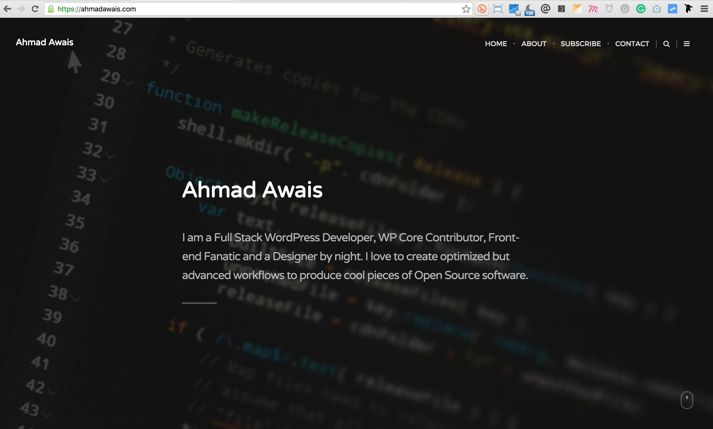
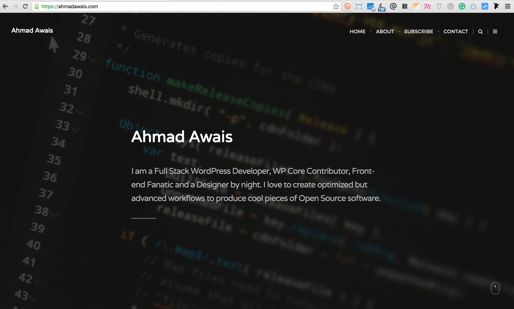
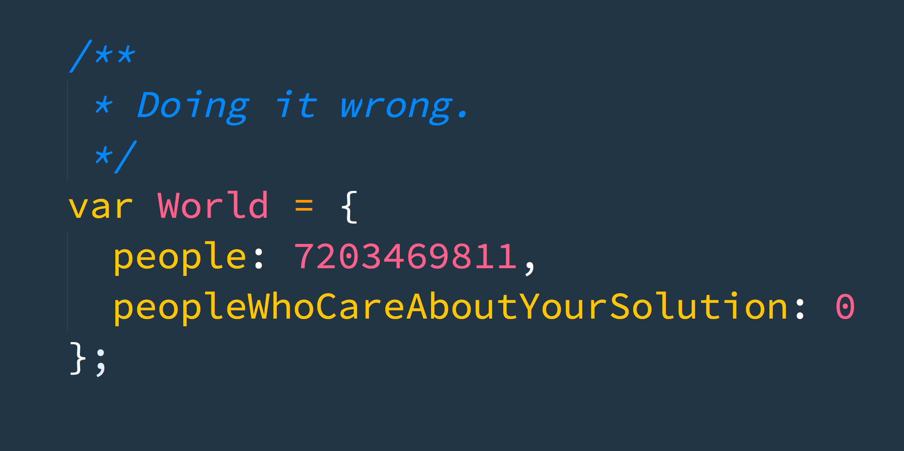
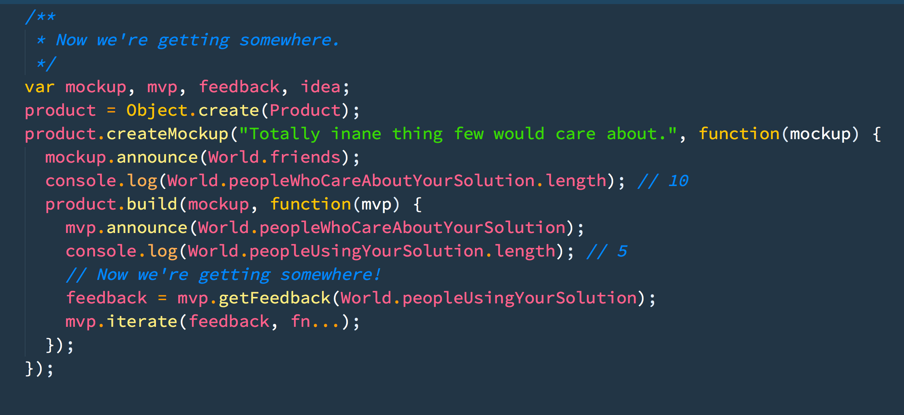
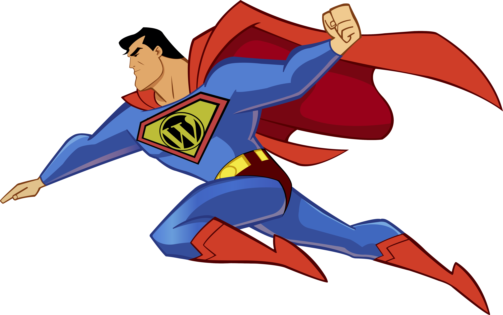
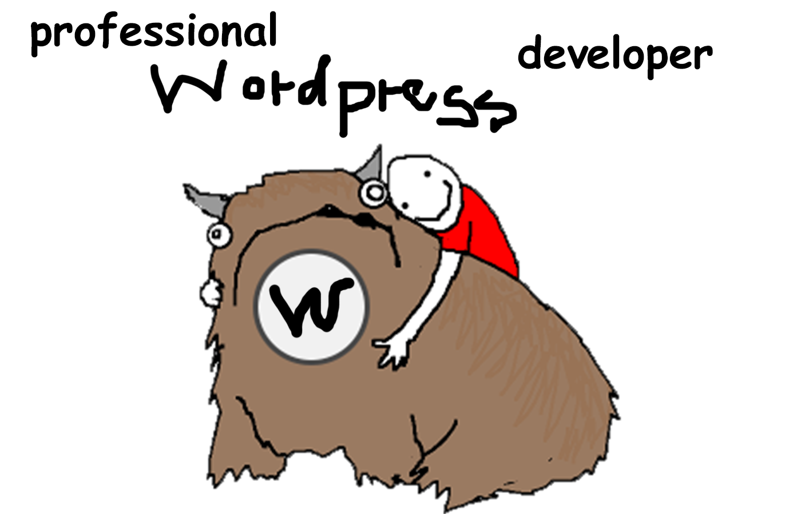
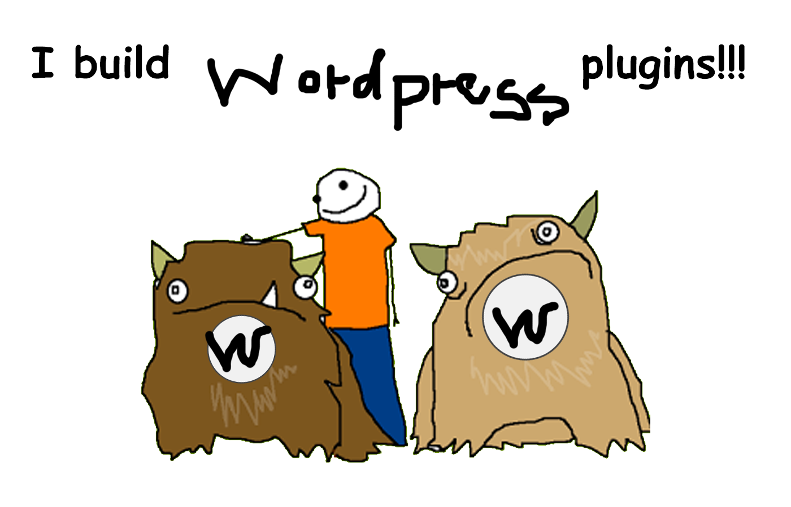

Personal Development
for a
WordPress Developer
by Ahmad Awais
AhmadAwais.com@mrahmadawaisI'm
Ahmad Awais
Full Stack Developer & WordPress Core Contributor
I will tweet the link of these slides,
shortly after the talk.
 AhmadAwais.com
AhmadAwais.comLet's talk about development.
First, a story
It's about
Audio/Compact Cassettes
$20 Billion to $WTF
In 10 Years!
- Audio Cassettes
→ Released by Philips in 1962
→ Popular Between 1985 and 1995
→ Decline in early 2000's - Walkman by Sony
1979 — 2010
385 million units sold - Oxford Dictionary
Removed the word "cassette player"
in 2011
Web is evolving in exactly the same way.
Some developers realize it while others are waiting for the high tide.
Change is imminent!
What can you do about it?

You can be smart about your progress!
"There are too many languages!"
"Which one should I use?"
"Everything is changing too fast!"
😭
I'm overwhelmed
& Confused.
[sigh]😭 → 😢 → 😑 → 😮 → 😁 → 😄
This talk is about how to learn and develop yourself and not just code.
Self-learning
Options
Risk Analysis
WordPress
#1.
Self-learning
Why self-learning?
- Education system is broken
- Most of us are self-taught developers
How to teach yourself?
- Google
- Read the source code
- Implement it / Teach it
- Find help at StackExchange
- The Pomodoro Technique
- RescueTime
When?
- Freelancers! Remember you are doing it for you.
- Designers! You are not a pencil in hands of your client.
- Satuday/Sunday: Take at least one day off.
#2.
Options
→ The Employee
- Learn the craft.
- Best for beginners.
It may seem obvious, but often in your career you’ll be faced with choices between more money and more responsibility. The right choice—at least in the long term—is almost always more responsibility.
→ The Employee
Benefits
Stability.
Easier road to pursue.
Paid vacation.
Medical insurance.
Drawbacks
Lack of freedom.
Income is capped.
→ The Freelancer
- Market yourself.
- Buy your personal domain name.
- Your blog is your portfolio.
→ The Freelancer
Benefits
More freedom (set your own hours).
New projects to work on.
Potential to make more money.
Drawbacks
Have to find your own work.
Expense of running a business.
Trading one boss for many bosses.
→ The Entrepreneur
- Ideas are worth nothing!
- Do you have an audience?
- Start small and solve a problem.
- Idea validation is important.
- Partnerships & Joint Ventures.
People Who Care About Your Solution
People Who Are Using Your Solution
→ The Entrepreneur
Benefits
Complete freedom.
Huge Earning Potential.
Work on what you want.
No boss.
Drawbacks
Most risky.
Completely on your own.
Requires many other skills.
Might end up working very long days.
VC/Funding ~ Bosses.
Pick one. Whatever is best for you.
I've been an employee, a freelancer and
now I am an entrepreneur cum freelancer.
#3.
Risk Analysis
Take a calculated risk
I knew the # of emails to send to get a client
You have tax-free $10 Million in your account,
and 10 years of your life left, what would you do?
#4.
WordPress!
WordPress is Open Source
Which means it’s code written by all sorts of people, not a single company.
And while this can sound crazy, it actually works.
Community is the best part
Community is the best part of WordPress.
During the nine years I’ve been a part of this community,
I’ve seen people selflessly contribute to core. I’ve also seen
companies hire employees with the sole job to improve
WordPress in favor of five for the future, and witnessed the
community’s unfettered ability to share everything.
Contribute To WordPress
There are many ways in which you can contribute to WordPress.
- Core Contribution
- Design UI/UX
- Improve Documentation
- Translate WordPress
- Help with Accessibility
- Help in Support Forums
- Theme Review for themes
- Meetups, Teach & Train
Build a
WordPress Plugin or Theme
Read
WordPress Coding Standards
Turning pro is a mindset.
If we are struggling with fear, self-sabotage, procrastination, self-doubt, etc., the problem is, we’re thinking like amateurs. Amateurs don’t show up. Amateurs crap out. Amateurs let adversity defeat them. The pro thinks differently. He shows up, he does his work, he keeps on truckin’, no matter what.
“Simply put, a professional is someone who takes their responsibilities and career seriously and is willing to make the tough choices that have to be made—often at their own expense—for the purpose of doing what they know is right.”
You vs U
WordPress Developer
WordPress vs Wordpress
(notice the lowercase “p”)
WordPress vs Wordpress
(notice the lowercase “p”)
Whew. That was a lot.
Perspective is important
WordPress will change your life if you let it
C.Lema
Questions?
@mrahmadawaisAhmadAwais.com